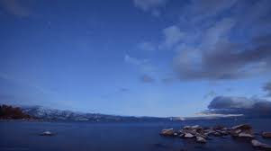
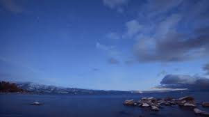

Yellowstone National Park


Geographical Location: North America
Yellowstone National Park is renowned for its geothermal wonders, featuring erupting geysers and colorful hot springs. It is also home to diverse wildlife, including grizzly bears, wolves, and herds of bison, making it a unique and captivating natural haven.
Eestablished in 1872, Yellowstone is not only the first national park in the world but also a mesmerizing expanse showcasing geothermal marvels and pristine wilderness.2
Photo Gallery


Lake Tahoe
' 

Geographical Location: North America
When it comes to things to do in South Lake Tahoe, you can shred down the mountain from 10,067 ft. at Heavenly Mountain Resort’s peak or you can dive into the depths of Lake Tahoe. It’s more than 1600 ft. deep, making it one of the deepest lakes in North America. Needless to say, there’s plenty of things to do in Lake Tahoe above and below the surface.
All parts of Lake Tahoe are beautiful and have something unique to offer. South Lake Tahoe is popular for its ski resorts like Heavenly, Sierra at Tahoe and Kirkwood ski resorts. South Lake Tahoe is also popular for its restaurants, shopping, casino resorts and vibrant nightlife.
Photo Gallery


Niagara Falls
'

Geographical Location: North America
Niagara Falls is located on the border between Canada and the United States. Connecting Lake Erie and Lake Ontario, Niagara Falls has the highest flow rate of any waterfall in North America.
Niagara Falls draws in thousands of visitors every year, and for good reason. As such, there are numerous things that you can see while you visit the falls, and it is very easy to make a full trip out of seeing this wonderful sight.
Photo Gallery